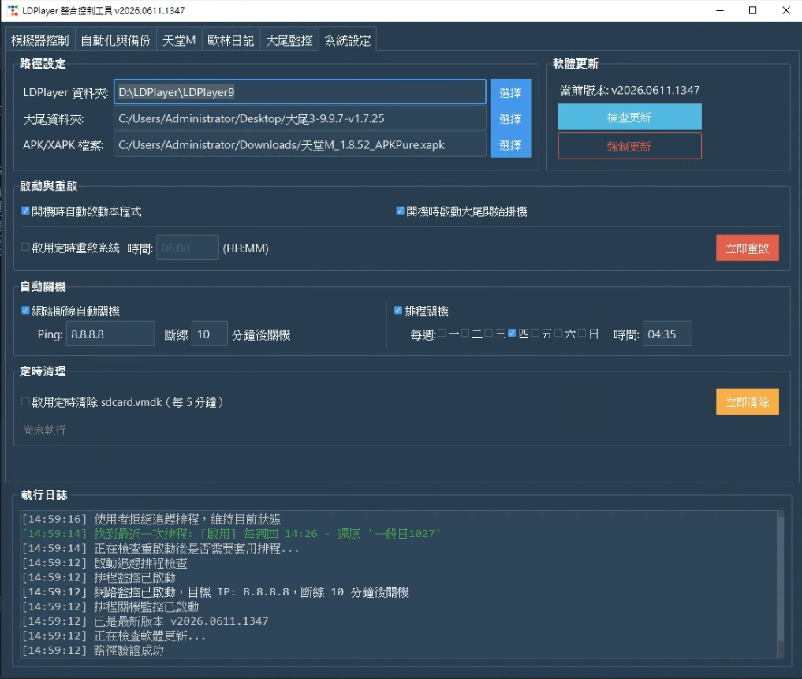

AutoLD 是一款專為 LDPlayer 雷電模擬器量身打造的整合控制與輔助工具。完美整合模擬器批次管理、歐林日記自動抽裝、天堂M多角色副本排程及系統自動關機，讓模擬器管理更輕鬆、更有效率。
支援快速的角色切換設定備份與還原。包含跨角色切換、打突襲副本、排程打假日活動副本等排程規劃。
支援一鍵批次開啟與關閉雷電模擬器、天堂M遊戲，自動批量更新 apk 檔案，並自動確認模擬器設定符合標準。
提供多開視窗批量指令，支援一鍵開啟背包、批量角色切換等快捷日常手動點擊操作。
支援排程定時自動關機。在遊戲伺服器停機維修時，自動關閉電腦主機，以節省电力並保護硬體健康。
全自動進行歐林日記抽裝與刷新，智慧辨識畫面，一旦偵測出現紅色裝備時便自動執行鎖定。
演示了 AutoLD 自動切換角色、排程點擊並進入各個任務副本與自動化交接的工作流程，整體銜接流暢。
展示如何透過定時管理器觸發批次模擬器動作，並在指定時間或條件下排程換角，實現高效率的多帳號託管運作。
下載 AutoLD.zip 檔案並解壓縮至非系統碟，建議使用系統管理員權限運行主程式。
啟動軟體後，首要任務是配置以下三個核心路徑（可對照右側介面圖示）：
開啟雷電模擬器設定，將解析度與 DPI 調整為下方推薦規格，以確保滑鼠座標定位與偵測完全精確。

AutoLD 是一款專門為雷電模擬器設計的管理與輔助操作工具。使用者在使用本軟體進行任何遊戲自動化操作時，應自行承擔與遵守該遊戲服務合約之規範。本軟體僅供模擬器環境管理與技術交流，若因不當操作導致任何遊戲帳號受損或被懲處，本軟體與作者不承擔任何法律與賠償責任。